说明：
- 上层目录包含了下层所有目录的内容。比如顶层“五明”目录包含了所有的素材，因此下载了上层目录就不许需要再下载它的子目录了。
- 默认目录链接使用了Very Sync软件，可以在国内快速下载，“海外”链接需要使用在国内被禁用的Resilio Sync软件
- Very Sync使用指引：
- 首次使用在点击链接的时候会跳转到软件下载页面，点击蓝色按钮安装微力同步
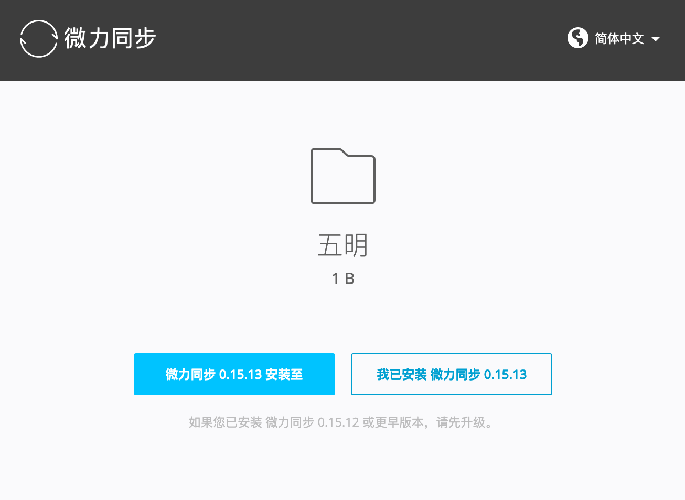
- 软件安装成功并开始运行后，再次回到本页面点击下载链接，应该提示打开微力同步。
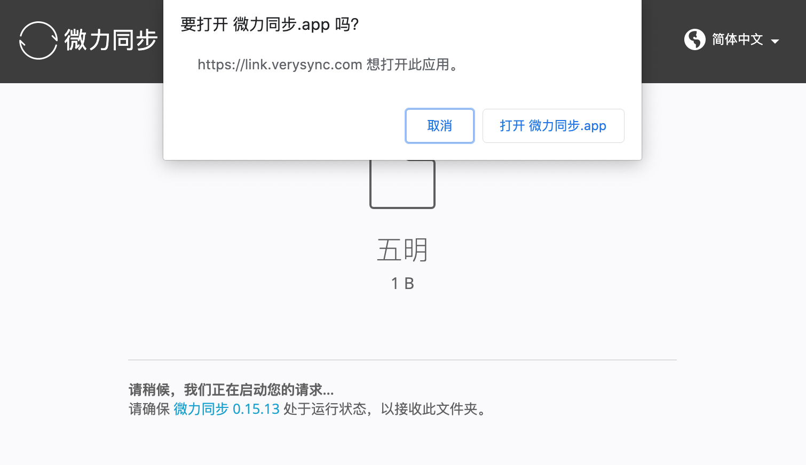
- 如果页面未能打开微力同步，则
- 右键点击下载链接，选择复制链接地址
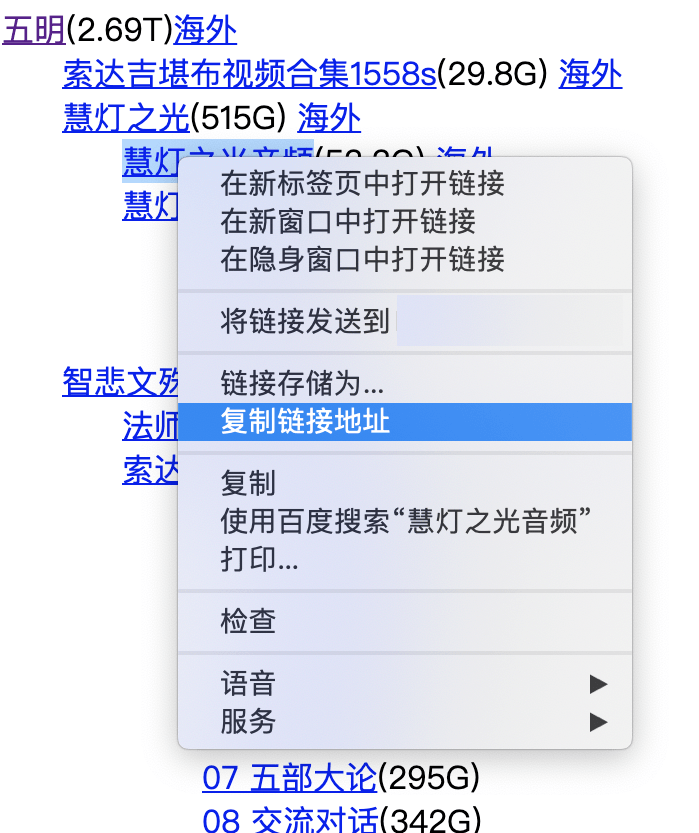
- 回到微力同步软件中，点击左上角加号图标，选择“输入密钥或链接”
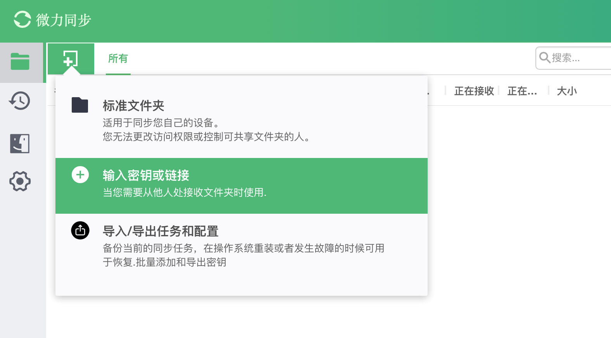
- 把刚才复制的下载链接地址粘贴到弹出的输入框中点击“下一步”按钮
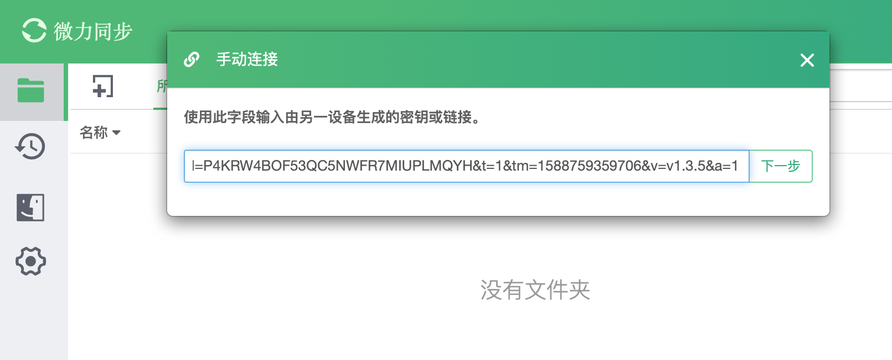
- 选择要下载到的本地目录，点击“连接”按钮开始下载
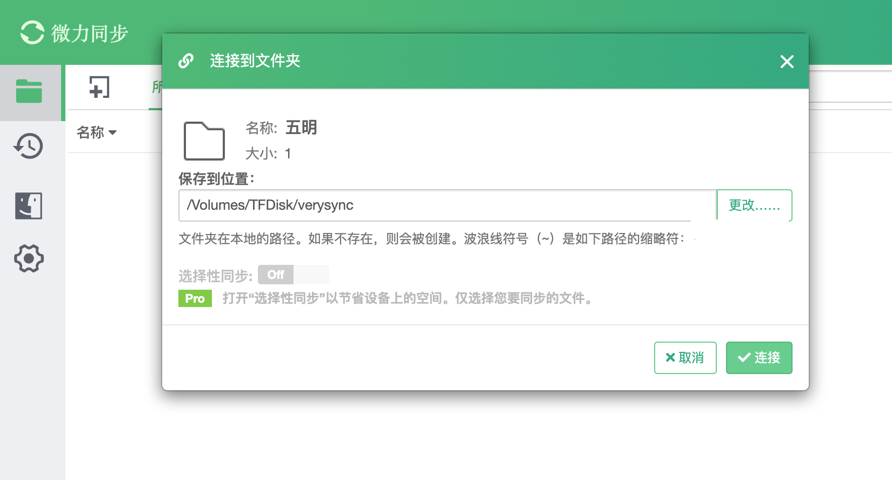
- 下载完成后保持软件打开状态可以为其他人下载提供加速。
- Resilio Sync使用指引：
- 在中国大陆可能无法使用Resilio Sync软件
- 首次使用在点击链接的时候会跳转到软件下载页面，点击白色的 Install Sync 按钮安装 Resilio Sync软件
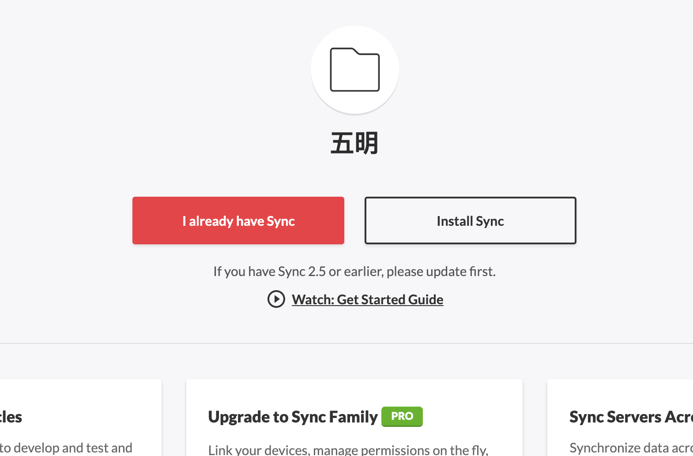
- 软件安装成功并开始运行后，再次回到本页面点击下载链接，应该提示打开BitTorrent Sync App
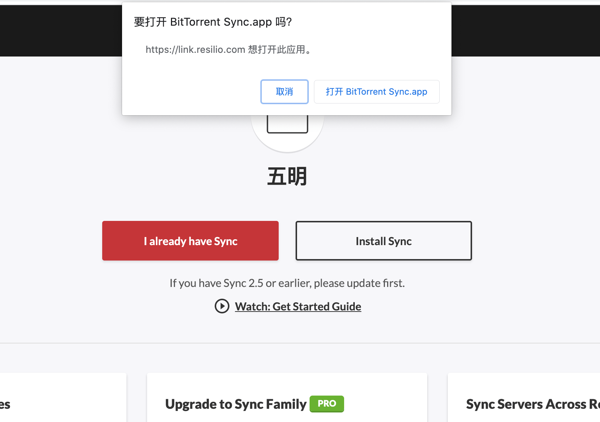
- 如果页面未能打开BitTorrent Sync，则
- 右键点击要下载目录的“海外”链接，选择复制链接地址
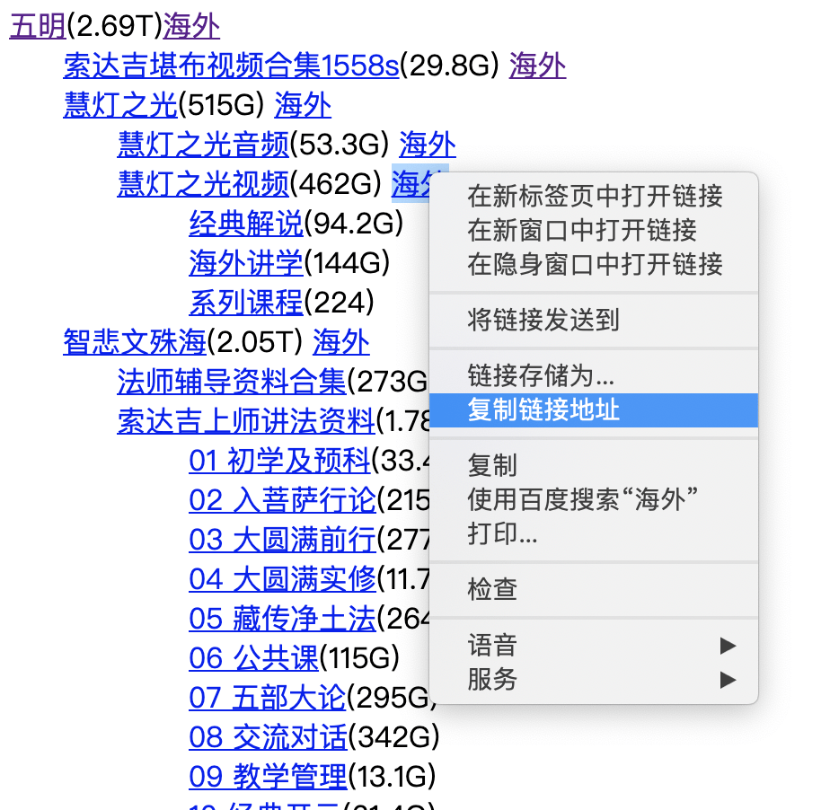
- 回到BitTorrent Syn软件中，点击左上角“Add Folder”按钮右边的向下箭头，选择“Enter a key or link”
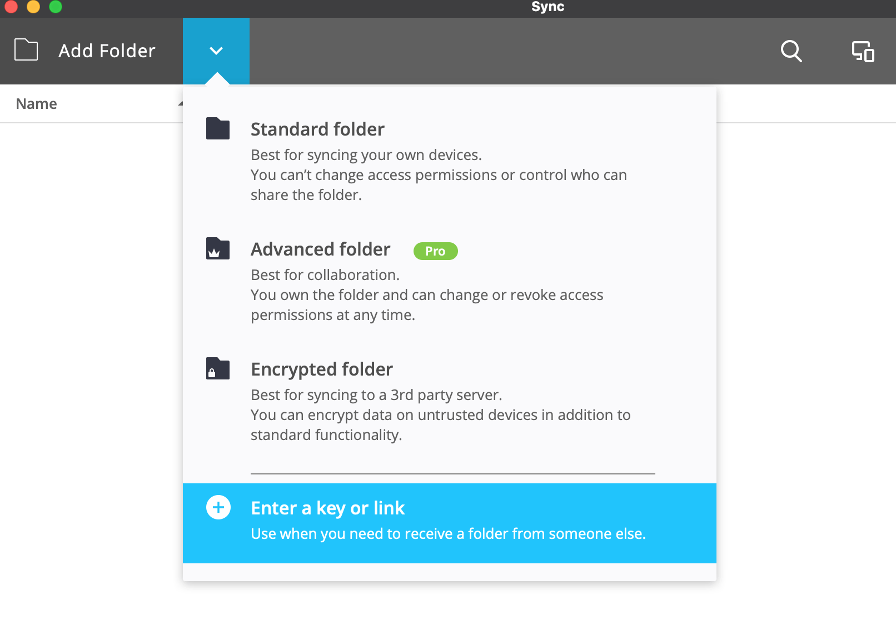
- 把刚才复制的下载链接地址粘贴到弹出的输入框中，点击“Next”按钮
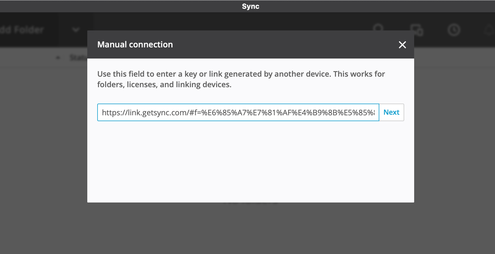
- 选择要下载到的本地目录，点击“连接”按钮开始下载
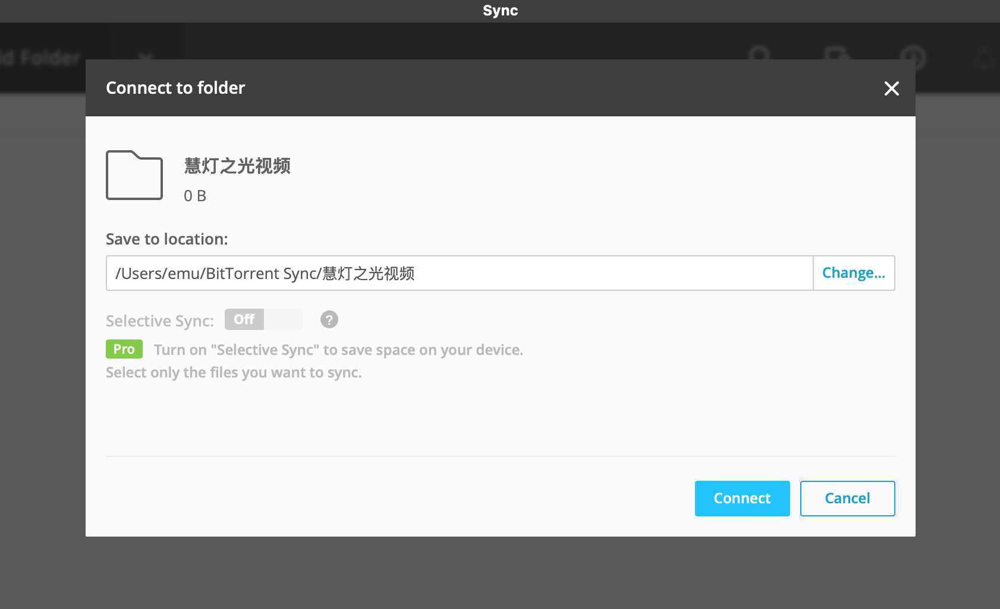
- 下载完成后保持软件打开状态可以为其他人下载提供加速。